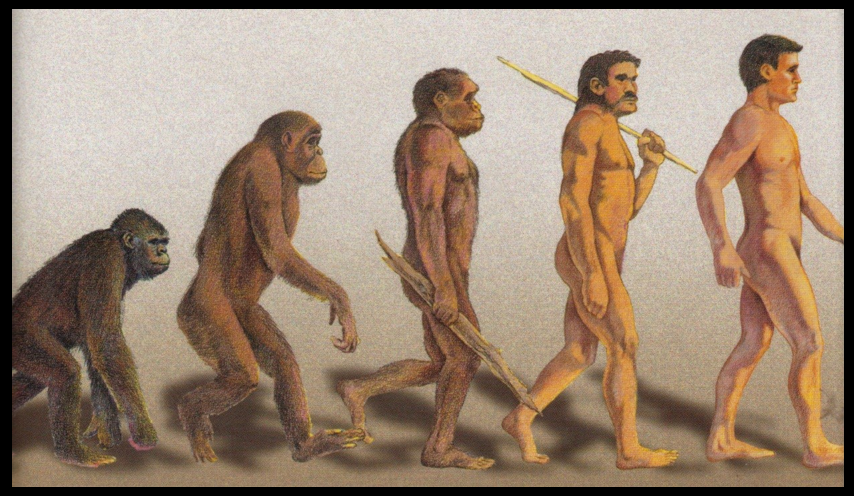
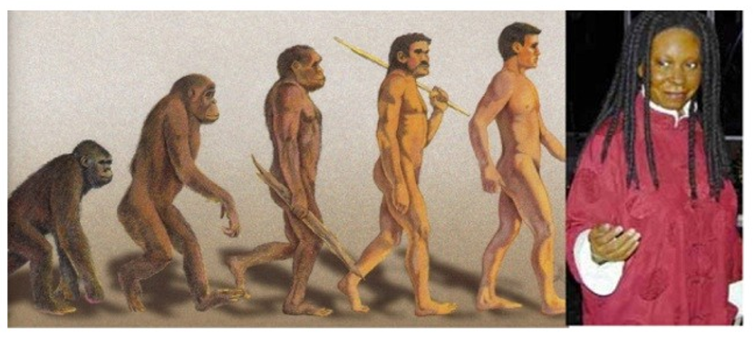

| Feature Article - October 2001 |
| by Do-While Jones |
But not all of the alleged human ancestors fit into this category. The famous skeleton, Lucy, is certainly sufficient evidence that Australopithecus afarensis really existed. The question is, "Was Lucy a transitional form?" In other words, was Lucy an ape, a human, or a link between apes and men?
Just as we did last month, we want to establish some criteria to determine if a fossil is evidence of evolution of one species to another. What characteristics does a fossil have to have to be considered a "transitional form?"
Bats look a lot like mice, and a lot like birds. One could imagine a mouse (or maybe a small squirrel) growing skin flaps under its arms. It is imaginable that these skin flaps eventually evolved into wings. Then, one might imagine that the fur evolved into feathers, and the bat became a full-fledged bird. A bat certainly looks like it is half mammal and half bird. The story is every bit as plausible as the story that dinosaurs evolved into birds. Actually, it is a lot more plausible. But no evolutionist ever claims the bat is a transitional form. Why is that?
The short answer is that it doesn't fit their prejudice. They believe that reptiles (or dinosaurs) evolved into birds, and reptiles evolved into mammals. They don't believe mammals evolved into birds. A bat can't be a missing link, simply because they don't believe mammals evolved into birds. If they did believe it, bats would be their best proof of evolution.
If the argument from homology (that is, an argument that is based on how similar things look) were really valid, then one would have to believe that birds evolved from mammals, and that bats are the proof. Evolutionists recognize that, in the case of the bat, looks can be deceiving. The bat looks like a transitional form, but it isn't.
So, one might say that if a critter looks like it is half way between two creatures, and one of those creatures is believed to have evolved from the other, then it is a transitional form. But, if a critter looks like it is half way between two creatures, and neither of those creatures is believed to have evolved from the other, then it is not a transitional form. In other words, what it looks like doesn't really matter. What matters is what is already believed. If it supports the prejudice, then it is evidence. If it contradicts the prejudice, then it is just an accidental similarity that proves nothing. That's not good science.
This argument is only valid if the fossil record really spans hundreds of millions of years. The argument rests solidly on the assumption that sedimentary layers accumulate gradually over long periods of time. Each paper-thin layer must represent a year or so. But we now know that very thick stratified rock layers can be formed quite rapidly. There are equations that explain why flowing muddy water will deposit sediments in thin layers 1. There is laboratory confirmation of those equations 2. There have been observations of flowing water depositing thick layers of finely laminated sedimentary rock in nature. So, the time scale of the fossil record is legitimately called into question.
But suppose, for the sake of discussion, that the fossil record really does represent long periods of time. The fact that we haven't found bats millions of years before birds, and haven't found mice millions of years before bats, might just mean that we haven't found them. It might really be that the oldest mice and bats haven't been found, but the oldest birds have, creating the illusion that they all evolved at roughly the same time. Even if the fossil record does represent long periods of time, you can't be sure that it presents an accurate picture of when things evolved because some of the earliest fossils might not have been discovered yet.
In fact, we are sure you have, at one time or another, seen headlines that say, "Oldest fossil [mammal / bird / fish / human / or whatever] found!" Scientists are always finding things that they claim are millions of years older than previously believed. We've never seen a headline that said, "Seventh oldest fossil mammal found!" Call us suspicious, but we think we know the reason for that. We think that scientists realize (consciously or unconsciously) that fame awaits the discoverer of the oldest fossil, but not an average age fossil. We think that this might influence the date that is assigned to new fossil discoveries. Furthermore, we think that if one tries enough dating techniques, one can find a technique that provides the desired age. Not only that, we think one can always come up with apparently rational explanations why all the other dating techniques gave incorrect results and can be discarded.
So, here is the problem. For a fossil to be transitional, it has to occupy the proper place in a time-ordered sequence. But in the absence of a reliable method for determining the true age of fossils, one can't ever establish a time order. That means you either have to accept the age of the fossils on faith, or you have to consider time an irrelevant criterion because it cannot be determined accurately.
A transitional fossil should be a step in a logical progression. For example, the drawings one often sees of apes evolving into men shows a series of creatures where the first one is stooped over, and the last one standing fully erect. The intermediate forms stand straighter and taller.
 |
|---|
That's why the discussion of Lucy's posture is so important. If Lucy were a descendant of the apes, and an ancestor of men, she should have stood more upright than an ape, but not as upright as a man. Strangely, the bones that were in Lucy's feet are some of the few bones that were never discovered. Those bones would have told us if she had long curved toes, good for climbing trees; or human-like toes, good for walking upright.
Some people say that some very human-like footprints in rocks were made by Lucy's species. Without any toe bones, that is a difficult assertion to prove.
Maybe the human-like footprints were made by humans. Evolutionists would be quick to point out that humans could not have made them because humans hadn't evolved yet. That argument rests on the supposition that the theory of evolution is true, and that the age of the rocks have been correctly determined. There are several other interpretations that are consistent with the data. One is that modern man evolved millions of years earlier than believed, and he made those tracks at the same time as Lucy was swinging in the trees. Another possibility is that the age of the rocks has been incorrectly determined, and that the footprints were made by modern men several thousand years ago, and that Lucy was a tree-dwelling ape that went extinct several thousand years ago.
Another progression that is often cited is the increase in brain size. Apes have smaller brains than men. Therefore, one would expect a transitional form to have a larger brain than an ape, but a smaller brain than a man. Along with this goes the assumption that intelligence is related to brain size.
There are two problems with this line of reasoning. One is that Neanderthal man had a brain about 30% larger than modern man's. So, if Neanderthal man was our ancestor, our brains should be even bigger than his. This may be one of the reasons why many evolutionists now say that Neanderthal man was not an ancestor, but a cousin.
The second problem is that there is absolutely no evidence that intelligence is related to brain size. If there were a relationship, then we could use hat sizes rather than Iowa test scores to determine how much our school children have learned. Colleges would ask for hat sizes rather than S.A.T. scores when deciding which students to admit. They don't do this because there is no relationship between intelligence and brain size.
Consider the ant. Ants have pretty small brains--much smaller than most people's brains. But ants seem to be able to outsmart people whenever there is a picnic. People can't figure out how to keep ants out of the food. No matter what people do, ants figure out a way to overcome the barriers and get to the food. Not only that, ants know how to communicate with each other, fight wars against common enemies, build nests, store food, and walk without stumbling over their feet. Some people don't know how to manage two feet skillfully. Ants can coordinate six of them.
If you look at any picture of the progression of apes to man, you will notice a common thread. The number of intermediate forms may be different, and the individual stages may be different, but one thing is always the same. There is a progression from a dark, hairy ape to a relatively hairless, fair-skinned man. You never see pictures like this:
 |
|---|
If we are to believe the pictures, dark-skinned men (and women) haven't evolved as much as white men have.
In the nineteenth century, when Africans were considered to be inferior to white people, and fit only for slavery, this progression made sense. It is more difficult to justify this belief today. But there are still two uncomfortable questions, "If white-skinned people evolved from dark-skinned apes, just when did fair skin evolve? Why did some people evolve fair skin, and others fail to evolve that far?"
If skin color is a sign of progressive evolution, then would not the missing links have to be rather dark skinned? Isn't this the way the drawings always depict them?
Lack of progression is what forced the evolutionists to abandon the horse as their prime example of evolution. They thought that the fusion of five toes into three toes, into one very big toe, was an example of evolutionary progression. A gradual increase in size from a creature the size of a badger to a modern horse would be evidence of evolution. Then they ran into time problems. When they arranged the fossils in chronological order (based on their understanding of the fossil record), there wasn't a clear progression of decreasing number of toes and increasing height.
Many evolutionists believe the "out of Africa" scenario. They think evolution began in Africa and continued as hominids migrated into Europe and Asia. This is another example of how prejudice influences interpretation. In the 19th century, it was believed that "Negroes" weren't as highly evolved as white folks. Besides, they found fossils of "primitive" humans in Africa, and "modern man" in Europe. Therefore, he must have migrated from Africa to Europe. But that conclusion is based primarily on racism.
The alleged presence of upright walking apes in Africa doesn't mean man evolved there any more than the factual presence of upright walking penguins in Antarctica means man came from Antarctica. If species don't evolve into other species, then an ape is no more related to man than a penguin is, no matter how it walks. So, the presence of upright walking apes or penguins doesn't have any bearing at all as to where man originated.
In short, there is no compelling argument that Lucy was a human ancestor. In fact, many evolutionists think she was an evolutionary dead end. Her technical name, Australopithecus afarensis, means "southern ape from Africa." As far as we can tell, that's what she was. She was just an ape, no more related to us than a penguin.
| Quick links to | |
|---|---|
| Science Against Evolution Home Page |
Back issues of Disclosure (our newsletter) |
| Web Site of the Month |
Topical Index |
Footnotes:
1
Bulletin de la Société Géologique de France, 1 September 1993, "Fundamental Experiments on Stratification" by Dr. Pierre Y. Julien (Colorado State University) and Guy Berthault (Ecole Polytechnique de France) https://pubs.geoscienceworld.org/sgf/bsgf/article-abstract/164/5/649/122678/Experiments-on-stratification-of-heterogeneous
2
ibid.